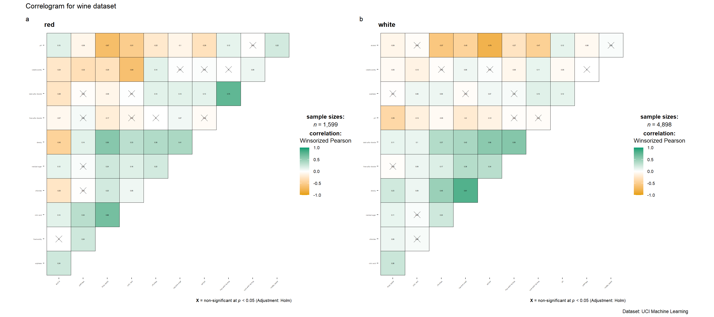
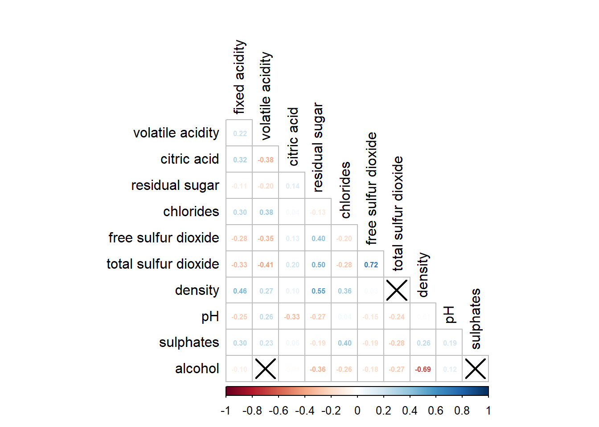

pacman::p_load('plotly', 'tidyverse','ggstatsplot')Hands-on_Ex06
Creating Ternary Plot with R
Import package
Dowload ggtern
- ggtern, a ggplot extension specially designed to plot ternary diagrams. The package will be used to plot static ternary plot
library(ggtern)Registered S3 methods overwritten by 'ggtern':
method from
grid.draw.ggplot ggplot2
plot.ggplot ggplot2
print.ggplot ggplot2--
Remember to cite, run citation(package = 'ggtern') for further info.
--
Attaching package: 'ggtern'The following objects are masked from 'package:ggplot2':
aes, annotate, ggplot, ggplot_build, ggplot_gtable, ggplotGrob,
ggsave, layer_data, theme_bw, theme_classic, theme_dark,
theme_gray, theme_light, theme_linedraw, theme_minimal, theme_voidImport data
pop_data <- read_csv("data/respopagsex2000to2018_tidy.csv")Rows: 108126 Columns: 5
── Column specification ────────────────────────────────────────────────────────
Delimiter: ","
chr (3): PA, SZ, AG
dbl (2): Year, Population
ℹ Use `spec()` to retrieve the full column specification for this data.
ℹ Specify the column types or set `show_col_types = FALSE` to quiet this message.glimpse(pop_data)Rows: 108,126
Columns: 5
$ PA <chr> "Ang Mo Kio", "Ang Mo Kio", "Ang Mo Kio", "Ang Mo Kio", "An…
$ SZ <chr> "Ang Mo Kio Town Centre", "Ang Mo Kio Town Centre", "Ang Mo…
$ AG <chr> "AGE0-4", "AGE0-4", "AGE0-4", "AGE0-4", "AGE0-4", "AGE0-4",…
$ Year <dbl> 2011, 2012, 2013, 2014, 2015, 2016, 2017, 2018, 2011, 2012,…
$ Population <dbl> 290, 270, 260, 250, 260, 250, 200, 180, 290, 290, 270, 300,…Derive three new measures, namely: young, active, and old
agpop_mutated <- pop_data %>%
mutate(Year = as.character(Year)) %>%
# Unique values in AG seperate to distinct columns, fill with corresponding Population value
spread(AG, Population) %>%
#calculate the sum of values in columns 4 to 8 (AG columns) for each row
mutate(YOUNG = rowSums(.[4:8])) %>%
mutate(ACTIVE = rowSums(.[9:16])) %>%
mutate(OLD = rowSums(.[17:21])) %>%
mutate(TOTAL = rowSums(.[22:24])) %>%
filter(Year == 2018) %>%
filter(TOTAL > 0)
glimpse(agpop_mutated)Rows: 234
Columns: 25
$ PA <chr> "Ang Mo Kio", "Ang Mo Kio", "Ang Mo Kio", "Ang Mo Kio", "An…
$ SZ <chr> "Ang Mo Kio Town Centre", "Cheng San", "Chong Boon", "Kebun…
$ Year <chr> "2018", "2018", "2018", "2018", "2018", "2018", "2018", "20…
$ `AGE0-4` <dbl> 180, 1060, 900, 720, 220, 550, 260, 830, 160, 810, 350, 282…
$ `AGE05-9` <dbl> 270, 1080, 900, 850, 310, 630, 340, 930, 160, 1070, 460, 32…
$ `AGE10-14` <dbl> 320, 1080, 1030, 1010, 380, 670, 430, 930, 220, 1300, 490, …
$ `AGE15-19` <dbl> 300, 1260, 1220, 1120, 500, 780, 500, 860, 260, 1450, 400, …
$ `AGE20-24` <dbl> 260, 1400, 1380, 1230, 550, 950, 640, 1020, 350, 1500, 330,…
$ `AGE25-29` <dbl> 300, 1880, 1760, 1460, 500, 1080, 690, 1400, 340, 1590, 310…
$ `AGE30-34` <dbl> 270, 1940, 1830, 1330, 300, 990, 440, 1350, 230, 1390, 310,…
$ `AGE35-39` <dbl> 330, 2300, 1920, 1540, 290, 1100, 400, 1700, 250, 1770, 630…
$ `AGE40-44` <dbl> 430, 2090, 1900, 1700, 420, 1140, 490, 1720, 260, 1860, 810…
$ `AGE45-49` <dbl> 470, 2180, 1910, 1830, 550, 1230, 580, 1530, 320, 2000, 830…
$ `AGE50-54` <dbl> 360, 2160, 2070, 1880, 550, 1350, 640, 1480, 300, 1980, 620…
$ `AGE55-59` <dbl> 310, 2150, 2140, 1810, 560, 1420, 730, 1720, 360, 2010, 460…
$ `AGE60-64` <dbl> 300, 2270, 2170, 1750, 450, 1290, 680, 1680, 350, 1980, 390…
$ `AGE65-69` <dbl> 270, 2130, 2050, 1700, 410, 1150, 500, 1610, 250, 1790, 340…
$ `AGE70-74` <dbl> 190, 1370, 1570, 1240, 290, 830, 280, 1190, 160, 1090, 220,…
$ `AGE75-79` <dbl> 150, 980, 1170, 870, 220, 680, 210, 980, 100, 690, 110, 257…
$ `AGE80-84` <dbl> 60, 560, 640, 540, 140, 360, 180, 560, 70, 390, 80, 1520, 2…
$ AGE85over <dbl> 60, 440, 530, 430, 140, 340, 130, 460, 60, 310, 100, 1350, …
$ YOUNG <dbl> 1330, 5880, 5430, 4930, 1960, 3580, 2170, 4570, 1150, 6130,…
$ ACTIVE <dbl> 2770, 16970, 15700, 13300, 3620, 9600, 4650, 12580, 2410, 1…
$ OLD <dbl> 730, 5480, 5960, 4780, 1200, 3360, 1300, 4800, 640, 4270, 8…
$ TOTAL <dbl> 4830, 28330, 27090, 23010, 6780, 16540, 8120, 21950, 4200, …Static graph with ggtern
ggtern(data = agpop_mutated,aes(x= YOUNG, y = ACTIVE, z = OLD))+
geom_point()+
labs(title="Population structure, 2018") +
theme_rgbw()
Interactive graph with plotly
label <- function(txt) {
# Defines a function named "label" that takes one argument "txt"
list(
text = txt,
x = 0.1, y = 1,
# Sets the x and y coordinates of the label (x:0 left, y:0 bottom)
xref = "papaer", yref = "paper",
# Sets label reference to "paper" (whole plot area)
align = "center", # Sets the alignment of the label text to the center
font = list(family = "serif", size = 15, color = "white"),
# Sets the font family to "serif"
bgcolor = "#b3b3b3", bordercolor = "black", borderwidth = 2
) #background/border color
}
axis <- function(txt){
list(
title = txt, tickformat = ".0%", tickfont = list(size = 10)
) # Sets the tick format to display percentages with no decimal places
}
ternaryAxes <- list(
aaxis = axis("Young"), # Configures the "a" axis with the title "Young"
baxis = axis("Active"),
caxis = axis("OLD")
)
plot_ly(
agpop_mutated,
a = ~YOUNG,
b = ~ACTIVE,
c = ~OLD,
color = I("black"),
type = "scatterternary"
) %>%
layout(
annotations = label("Ternary Markers"),
ternary = ternaryAxes
# Assigns the "ternaryAxes" configuration to the ternary plot
)No scatterternary mode specifed:
Setting the mode to markers
Read more about this attribute -> https://plotly.com/r/reference/#scatter-modeVisual Correlation Analysis
Data preparation
Import package
pacman::p_load(corrplot, ggstatsplot, tidyverse)Import data
wine <- read_csv("data/wine_quality.csv")Rows: 6497 Columns: 13
── Column specification ────────────────────────────────────────────────────────
Delimiter: ","
chr (1): type
dbl (12): fixed acidity, volatile acidity, citric acid, residual sugar, chlo...
ℹ Use `spec()` to retrieve the full column specification for this data.
ℹ Specify the column types or set `show_col_types = FALSE` to quiet this message.glimpse(wine)Rows: 6,497
Columns: 13
$ `fixed acidity` <dbl> 7.4, 7.8, 7.8, 11.2, 7.4, 7.4, 7.9, 7.3, 7.8, 7…
$ `volatile acidity` <dbl> 0.700, 0.880, 0.760, 0.280, 0.700, 0.660, 0.600…
$ `citric acid` <dbl> 0.00, 0.00, 0.04, 0.56, 0.00, 0.00, 0.06, 0.00,…
$ `residual sugar` <dbl> 1.9, 2.6, 2.3, 1.9, 1.9, 1.8, 1.6, 1.2, 2.0, 6.…
$ chlorides <dbl> 0.076, 0.098, 0.092, 0.075, 0.076, 0.075, 0.069…
$ `free sulfur dioxide` <dbl> 11, 25, 15, 17, 11, 13, 15, 15, 9, 17, 15, 17, …
$ `total sulfur dioxide` <dbl> 34, 67, 54, 60, 34, 40, 59, 21, 18, 102, 65, 10…
$ density <dbl> 0.9978, 0.9968, 0.9970, 0.9980, 0.9978, 0.9978,…
$ pH <dbl> 3.51, 3.20, 3.26, 3.16, 3.51, 3.51, 3.30, 3.39,…
$ sulphates <dbl> 0.56, 0.68, 0.65, 0.58, 0.56, 0.56, 0.46, 0.47,…
$ alcohol <dbl> 9.4, 9.8, 9.8, 9.8, 9.4, 9.4, 9.4, 10.0, 9.5, 1…
$ quality <dbl> 5, 5, 5, 6, 5, 5, 5, 7, 7, 5, 5, 5, 5, 5, 5, 5,…
$ type <chr> "red", "red", "red", "red", "red", "red", "red"…Correlation plot
Correlation matrix
pairs(wine[,2:12])
# selects columns 2 to 11Show the lower half of the correlation matrix (a correlation matrix is symmetric)
pairs(wine[,2:12], upper.panel = NULL)
Display upper half.
pairs(wine[,2:12], lower.panel = NULL)
Show correlation coefficients
panel.cor <- function(x, y, digits=2, prefix="", cex.cor, ...) {
usr <- par("usr") # Retrieves the current coordinate system from the graphics parameters
on.exit(par(usr)) # Sets the coordinate system back to the original after the function exits
par(usr = c(0, 1, 0, 1)) # Sets the coordinate system to cover the full plotting region
r <- abs(cor(x, y, use="complete.obs")) # Computes the correlation coefficient between x and y
txt <- format(c(r, 0.123456789), digits=digits)[1] # Formats the correlation coefficient with the desired number of digits
txt <- paste(prefix, txt, sep="") # Prepends the prefix to the correlation coefficient text
if(missing(cex.cor)) cex.cor <- 0.8/strwidth(txt) # Determines the size of the correlation text based on its width
text(0.5, 0.5, txt, cex = cex.cor * (1 + r) / 2) # Displays the correlation text in the center of the plot
}
pairs(wine[,2:12],
upper.panel = panel.cor)
Use ggcorrmat
Basic plot
# ggcorrmat(
# data = wine,
# cor.vars = 1:11,
# ggcorrplot.args = list(outline.color = "black",
# hc.order = TRUE,
# tl.cex = 10), # sets the font size of the text labels to be 10
# title = "Correlogram for wine dataset",
# subtitle = "Four pairs are not significant at p < 0.05"
# )
#
# ggplot.component = list(
# theme(text = element_text(size = 5),
# axis.text.x = element_text (size = 8),
# axis.text.y = element_text (size = 8))
# )Multiple plot
grouped_ggcorrmat(
data = wine,
cor.vars = 1:11,
grouping.var = type,
type = "robust",
p.adjust.method = "holm",
plotgrid.args = list(ncol = 2),
ggcorrplot.args = list(outline.color = "black",
hc.order = TRUE,
tl.cex = 1,
tl.srt = 45), #rotate the numerical values by 45 degree
annotation.args = list(
tag_levels = "a",
title = "Correlogram for wine dataset",
subtitle = "The measures are: alcohol, sulphates, fixed acidity, citric acid, chlorides, residual sugar, density, free sulfur dioxide and volatile acidity",
caption = "Dataset: UCI Machine Learning Repository"
)
)
Corrplot package
Compute the correlation
wine.cor <- cor(wine[,1:11])Blue colours are used to represent pair variables with positive correlation coefficients and red colours are used to represent pair variables with negative correlation coefficients. Darker colours indicate relatively stronger linear relationship between the paired variables.
corrplot(wine.cor)
Customize the design
The default is “full” which display full matrix, and circle shape.
Can change by method and type.
diag and tl.col are used to turn off the diagonal cells and to change the axis text label colour.
corrplot(wine.cor,
method = "ellipse",
type = "lower",
diag = FALSE,
tl.col = "black")
Mixed layout
corrplot.mixed(wine.cor,
lower = "ellipse",
upper = "number",
tl.pos = "lt", #text labels should be positioned at the left-top corner of each cell
diag = "l",
tl.col = "black")Combining corrgram with the significant test
Compute the p-values and confidence interval for each pair of variables
wine.sig = cor.mtest(wine.cor, conf.level = 0.95)corrplot(wine.cor,
method ="number",
type = "lower",
diag = FALSE,
tl.col = "black",
p.mat = wine.sig$p,
sig.level = 0.95)
Reorder corrgram
“AOE” is for the angular order of the eigenvectors.
corrplot.mixed(wine.cor,
lower ="ellipse",
upper ="number",
tl.pos = "lt", #left-top corner
order ="AOE",
tl.col ="black",
tl.cex = 0.8) #adjust word size
Using hclust, corrplot() can draw rectangles around the corrgram based on the results of hierarchical clustering.
corrplot(wine.cor,
method = "ellipse",
tl.pos = "lt",
tl.col = "black",
order="hclust",
hclust.method = "ward.D",
addrect = 3) #specific cells or regions that will be highlighted depend on the correlation matrix and the highest absolute correlation values
Heatmap for Visualising and Analysing Multivariate Data
Install packages
pacman::p_load(seriation, dendextend, heatmaply,tidyverse)